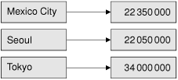

An associative container holds an arbitrary number of items of the same type, indexed by a key. Qt provides two main associative container classes: QMap<K, T> and QHash<K, T>.
A QMap<K, T> is a data structure that stores key–value pairs in ascending key order, as illustrated in Figure 11.6. This arrangement makes it possible to provide good lookup and insertion performance, and key-order iteration. Internally, QMap<K, T> is implemented as a skip-list.

One simple way to insert items into a map is to call insert():
QMap<QString, int> map;
map.insert("eins", 1);
map.insert("sieben", 7);
map.insert("dreiundzwanzig", 23);Alternatively, we can simply assign a value to a given key as follows:
map["eins"] = 1; map["sieben"] = 7; map["dreiundzwanzig"] = 23;
The [] operator can be used for both insertion and retrieval. If [] is used to retrieve a value for a non-existent key in a non-const map, a new item will be created with the given key and an empty value. To avoid accidentally creating empty values, we can use the value() function to retrieve items instead of []:
int val = map.value("dreiundzwanzig");If the key doesn't exist, a default value is returned using the value type's default constructor, and no new item is created. For basic and pointer types, zero is returned. We can specify another default value as the second argument to value(), for example:
int seconds = map.value("delay", 30);This is equivalent to
int seconds = 30;
if (map.contains("delay"))
seconds = map.value("delay");The K and T data types of a QMap<K, T> can be basic data types like int and double, pointer types, or classes that have a default constructor, a copy constructor, and an assignment operator. In addition, the K type must provide an operator<() since QMap<K, T> uses this operator to store the items in ascending key order.
QMap<K, T> has a couple of convenience functions, keys() and values(), that are especially useful when dealing with small data sets. They return QLists of a map's keys and values.
Maps are normally single-valued: If a new value is assigned to an existing key, the old value is replaced by the new value, ensuring that no two items share the same key. It is possible to have multiple key–value pairs with the same key by using the insertMulti() function or the QMultiMap<K, T> convenience subclass. QMap<K, T> has a values(const K &) overload that returns a QList of all the values for a given key. For example:
QMultiMap<int, QString> multiMap; multiMap.insert(1, "one"); multiMap.insert(1, "eins"); multiMap.insert(1, "uno"); QList<QString> vals = multiMap.values(1);
A QHash<K, T> is a data structure that stores key–value pairs in a hash table. Its interface is almost identical to that of QMap<K, T>, but it has different requirements for the K template type and usually provides much faster lookups than QMap<K, T> can achieve. Another difference is that QHash<K, T> is unordered.
In addition to the standard requirements on any value type stored in a container, the K type of a QHash<K, T> needs to provide an operator==() and be supported by a global qHash() function that returns a hash value for a key. Qt already provides qHash() functions for integer types, pointer types, QChar, QString, and QByteArray.
QHash<K, T> automatically allocates a prime number of buckets for its internal hash table and resizes this as items are inserted or removed. It is also possible to fine-tune performance by calling reserve() to specify the number of items expected to be stored in the hash and squeeze() to shrink the hash table based on the current number of items. A common idiom is to call reserve() with the maximum number of items we expect, then insert the data, and finally call squeeze() to minimize memory usage if there were fewer items than expected.
Hashes are normally single-valued, but multiple values can be assigned to the same key using the insertMulti() function or the QMultiHash<K, T> convenience subclass.
Besides QHash<K, T>, Qt also provides a QCache<K, T> class that can be used to cache objects associated with a key, and a QSet<K> container that only stores keys. Internally, both rely on QHash<K, T> and both have the same requirements for the K type as QHash<K, T>.
The easiest way to iterate through all the key–value pairs stored in an associative container is to use a Java-style iterator. Because the iterators must give access to both a key and a value, the Java-style iterators for associative containers work slightly differently from their sequential counterparts. The main difference is that the next() and previous() functions return an object that represents a key–value pair, rather than simply a value. The key and value components are accessible from this object as key() and value(). For example:
QMap<QString, int> map;
...
int sum = 0;
QMapIterator<QString, int> i(map);
while (i.hasNext())
sum += i.next().value();If we need to access both the key and the value, we can simply ignore the return value of next() or previous() and use the iterator's key() and value() functions, which operate on the last item that was jumped over:
QMapIterator<QString, int> i(map);
while (i.hasNext()) {
i.next();
if (i.value() > largestValue) {
largestKey = i.key();
largestValue = i.value();
}
}Mutable iterators have a setValue() function that modifies the value associated with the current item:
QMutableMapIterator<QString, int> i(map);
while (i.hasNext()) {
i.next();
if (i.value() < 0.0)
i.setValue(-i.value());
}STL-style iterators also provide key() and value() functions. With the non-const iterator types, value() returns a non-const reference, allowing us to change the value as we iterate. Note that although these iterators are called "STL-style", they deviate significantly from the std::map<K, T> iterators, which are based on std::pair<K, T>.
The foreach loop also works on associative containers, but only on the value component of the key–value pairs. If we need both the key and the value components of the items, we can call the keys() and values(const K &) functions in nested foreach loops as follows:
QMultiMap<QString, int> map;
...
foreach (QString key, map.keys()) {
foreach (int value, map.values(key)) {
do_something(key, value);
}
}